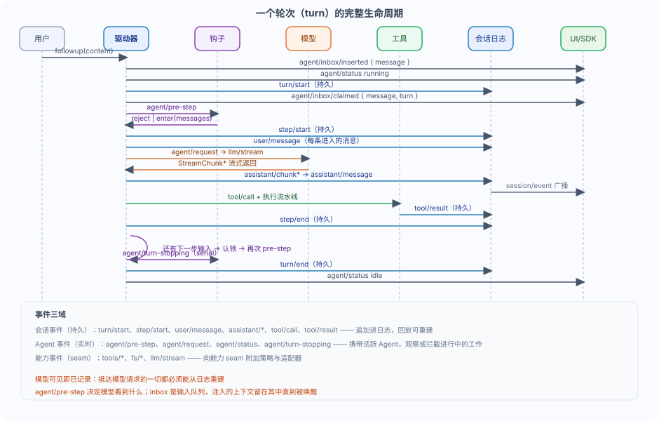

DeepSeek Harness 会话日志与轮次生命周期
你有没有想过：模型看到的那段对话历史，到底是存在哪里的？
dsh 的答案很特别：不存在专门的地方，而是从一份会话日志里派生出来的。
本章节我们将讲会话日志与轮次生命周期：日志怎么当唯一真源，轮次与步骤怎么划分，以及「模型可见即已记录」这条不变量。
一句话：会话是一份仅追加的事件日志，模型历史从日志派生；轮次与步骤是日志上的执行边界。
会话日志：唯一真源
Session是一份由类型化SessionEvent组成的仅追加日志。
它是 agent 完整交互历史的唯一真源，LLM 消息历史从日志派生而来，从不单独存储。
回放就是重新从同一组事件派生历史。
日志里的每个事件都有单调递增的seq（seq = log.length）和 epoch 毫秒的time。
事件基于type做真正的可辨识联合，因此switch (event.type)能直接收窄event.data，无需类型断言。
所有event.data都必须能无损序列化为 JSON，Session.append会在源头强制这一点。
模型可见即已记录。抵达模型请求的一切都必须能从日志重建，并由一项运行时不变量断言这一点。
因此，新增一项模型可见输入，就需要新增一个会话事件：扩展 SessionEventMap 并从日志渲染。
需要可回放 transcript 数据的 SDK 用户应当消费session/event事件流。
deriveMessages：从日志投影模型历史
Session.deriveMessages()把事件日志投影成模型看到的Message[]。
它是缓存的：每个 surface 节点在首次出现时投影一次，surface 重写时重建。
它返回的是冻结的消息数组，通过投影修改已记录的历史在类型上不可表达。
投影规则很直接：
| 事件 | 投影为 | 说明 |
|---|---|---|
user/message | 一条 user 消息 | 携带确切 content，可选 envelope 只作为日志展示元数据 |
assistant/message | 一条 assistant 消息 | 包含提供方、模型与可选回放状态 |
assistant/chunk | 跳过 | 属于回放/UI 数据，组装后的消息才是权威 |
tool/result | 一条带 tool-result 块的 user 消息 | 工具结果以 user 角色回到模型 |
turn/*、step/* | 跳过 | 结构信息，不投影为消息 |
一个细节：内容为空的assistant/message也会被跳过。
因 max-tokens 截断且无内容的步骤仍会记录一条 assistant/message 来保存用量、提供方与模型，但无内容的 assistant 轮次不得进入提供方 transcript。
事件三域
选对事件域，是大多数改动的第一个决定。
官方文档把事件分成三域，各有各的用途：
| 事件域 | 代表事件 | 特性 | 什么时候用 |
|---|---|---|---|
| 会话事件 | turn/start、step/start、user/message、assistant/*、tool/call、tool/result | 追加进日志并广播，持久事实 | 某个事实必须在重新加载后仍然存在 |
| Agent 事件 | agent/pre-step、agent/request、agent/status、agent/turn-stopping | 携带活跃 Agent，实时控制与状态 | 观察或拦截进行中的工作 |
| 能力事件 | tools/*、fs/*、llm/stream | 无导入循环地向 seam 附加策略 | 给能力 seam 挂策略与适配器 |
其中agent/pre-step、agent/request、llm/stream和三个tools/*事件是 waterfall，监听器必须调用next()才能委托下去。
agent/turn-stopping是 serial 事件，没有next()。
轮次与步骤的定义
一个步骤（step）是一次模型请求加上它调用的工具。
一个轮次（turn）包含零个或多个步骤：它在领取首条输入之前打开，在不再欠下任何工作时关闭。
注意：轮次包围一次模型循环执行，而不是整个会话日志。
官方时序图把完整流程画成：turn/start → agent/pre-step → step/start → llm/stream → 工具 → step/end → turn/end。

输入通过同一个 inbox 到达驱动器。
有些消息会立即唤醒驱动器；注入的上下文会留在 inbox 中，直到另一条消息将其唤醒。
agent/pre-step决定模型看到什么：监听器可以改写已领取的消息，也可以直接拒绝它们。
首次领取被拒绝或被改写为空时，仍会关闭一个不含步骤的持久轮次，因此日志会记录这次尝试。
turn 与 step 的关键事件
日志里每个边界都有对应的事件，下面列出最常用的一批。
| 事件 | 携带的数据 | 说明 |
|---|---|---|
turn/start | { turn } | 在 loop 认领排队输入或运行 pre-step 之前打开轮次 |
turn/end | { turn, reason } | 以 TurnEndReason 关闭轮次（completed / aborted / blocked / error / max-tokens / interrupted） |
step/start | { turn, step } | 打开某轮次里的一个步骤 |
step/end | { turn, step } | 关闭该步骤 |
user/message | UserMessage | 直接提示词、注入上下文、steering 与实时收件箱事件共享的带标识值 |
assistant/chunk | { turn, step, chunk } | 原始流式分片，token 级回放保真 |
assistant/message | { turn, step, message, usage? } | 组装后的 assistant 消息（派生历史用它） |
tool/call | { turn, step, callId, name, arguments } | 模型请求的一次工具调用，arguments 是模型产出的原始 JSON 字符串 |
tool/result | { turn, step, message, error?, meta? } | 一次完成的工具调用的模型可见结果 |
一个有用的语义：assistant/message事件会记录每次成功的提供方调用，包括返回空内容或以 max-tokens 结束的调用。
空内容不会进入派生历史，但该持久事件仍会保留用量。
它通过sourceEventSeqs精确列出对应的assistant/chunk事件，包括显式空列表。
动手示例：解析一份 JSONL 会话日志
下面是一小段会话日志（JSONL 的规范打包行布局），来自一次「修复 runoob 仓库 typo」的任务。
每一行是一个 SessionEvent，包含 type、seq、time 与 data。
{"type":"turn/start","seq":0,"time":1755000000000,"data":{"turn":1}}
{"type":"step/start","seq":1,"time":1755000000010,"data":{"turn":1,"step":1}}
{"type":"user/message","seq":2,"time":1755000000020,"data":{"role":"user","content":[{"type":"text","text":"Fix the typo in the runoob README."}]},"surfaceOp":"append","sourceEventSeqs":[0]}
{"type":"assistant/chunk","seq":3,"time":1755000000030,"data":{"turn":1,"step":1,"chunk":{"type":"text-delta","text":"I'll "}}}
{"type":"assistant/chunk","seq":4,"time":1755000000040,"data":{"turn":1,"step":1,"chunk":{"type":"tool-call-delta","name":"bash","arguments":"{\"command\":\"grep runoob README.md\"}"}}}
{"type":"assistant/message","seq":5,"time":1755000000050,"data":{"turn":1,"step":1,"message":{"role":"assistant","content":[{"type":"text","text":"I'll search"},{"type":"tool_use","id":"call_1","name":"bash","input":{"command":"grep runoob README.md"}}]},"usage":{"inputTokens":12,"outputTokens":4}},"surfaceOp":"append","sourceEventSeqs":[3,4]}
{"type":"tool/call","seq":6,"time":1755000000060,"data":{"turn":1,"step":1,"callId":"call_1","name":"bash","arguments":"{\"command\":\"grep runoob README.md\"}"}}
{"type":"tool/result","seq":7,"time":1755000000070,"data":{"turn":1,"step":1,"message":{"role":"tool","toolName":"bash","content":"runoob","isError":false}},"surfaceOp":"append","sourceEventSeqs":[6]}
{"type":"step/end","seq":8,"time":1755000000080,"data":{"turn":1,"step":1}}
{"type":"turn/end","seq":9,"time":1755000000090,"data":{"turn":1,"reason":{"kind":"completed"}}}
注意user/message、assistant/message、tool/result三种 surface 事件带有surfaceOp标记，说明它们如何加入派生 surface。
turn/start、step/start等边界事件不携带 surfaceOp，也不会投影成模型消息。
下面用 Python 重放这份日志，重建对话并标出 turn/step 边界。
实例
# 解析一份 JSONL 会话日志，重建模型可见的对话并标出 turn/step 边界。
# 这是 Session.deriveMessages() 的一个简化教学模型；真实实现是缓存的且返回冻结消息。
import json
import sys
def derive_messages(events):
"""只投影 surface 事件，模拟 deriveMessages 的投影规则。
user/message -> user 消息
assistant/message -> assistant 消息
tool/result -> 携带 tool-result 块的 user 消息
turn/*, step/*, assistant/chunk, tool/call 不投影为消息
"""
messages = []
for ev in events:
t = ev["type"]
d = ev["data"]
if t == "user/message":
messages.append({"role": "user", "content": d["content"]})
elif t == "assistant/message":
messages.append({"role": "assistant", "content": d["message"]["content"]})
elif t == "tool/result":
messages.append({"role": "tool", "name": d["message"]["toolName"], "content": d["message"]["content"]})
return messages
def main(path):
with open(path, encoding="utf-8") as f:
events = [json.loads(line) for line in f if line.strip()]
# 第一遍：打印执行边界，理解 turn 与 step 的嵌套关系。
for ev in events:
d = ev["data"]
if ev["type"] == "turn/start":
print(f"[turn/start] turn={d['turn']}")
elif ev["type"] == "turn/end":
print(f"[turn/end] turn={d['turn']} reason={d['reason']}")
elif ev["type"] == "step/start":
print(f" [step/start] turn={d['turn']} step={d['step']}")
elif ev["type"] == "step/end":
print(f" [step/end] turn={d['turn']} step={d['step']}")
elif ev["type"] == "assistant/chunk":
print(f" chunk: {d['chunk']['type']}")
elif ev["type"] == "tool/call":
print(f" tool/call: {d['name']} args={d['arguments']}")
# 第二遍：重建模型可见的派生历史。
print("\n模型可见的派生消息：")
for m in derive_messages(events):
if m["role"] == "tool":
print(f" [tool] {m['name']}: {m['content']}")
else:
print(f" [{m['role']}] {m['content']}")
if __name__ == "__main__":
main(sys.argv[1])
用这份日志跑一遍，输出大致是：
[turn/start] turn=1
[step/start] turn=1 step=1
chunk: text-delta
chunk: tool-call-delta
tool/call: bash args={"command":"grep runoob README.md"}
[step/end] turn=1 step=1
[turn/end] turn=1 reason={'kind': 'completed'}
模型可见的派生消息：
[user] [{'type': 'text', 'text': 'Fix the typo in the runoob README.'}]
[assistant] [{'type': 'text', 'text': 'I'll search'}, {'type': 'tool_use', ...}]
[tool] bash: runoob
原始
assistant/chunk在派生时被跳过，组装后的assistant/message才是权威。这就是「模型可见即已记录」：模型看到的每一条消息，都能从这份日志原样重建。
小结自测
会话日志是模型所见上下文的唯一来源，轮次与步骤是日志上的执行边界，事件三域帮你选择正确的扩展点。
自测题：
| 问题 | 参考 |
|---|---|
| 想保存「重新加载后仍然存在」的事实，用哪类事件？ | 会话事件（持久，追加进日志） |
| 模型看到的历史是从哪来的？ | Session.deriveMessages()从日志派生，从不单独存储 |
| 一个轮次可以包含多少个步骤？ | 零个或多个；领取首条输入之前打开，不再欠工作时关闭 |
点我分享笔记
<p style="font-size:14px;">笔记需要是本篇文章的内容扩展！</p><br> <p style="font-size:12px;"><a href="../tougao.html" target="_blank">文章投稿，可点击这里</a></p> <p style="font-size:14px;"><a href="../w3cnote/runoob-user-test-intro.html" target="_blank">注册邀请码获取方式</a></p> <h3 class="text-muted"><i class="fa fa-info-circle" aria-hidden="true"></i> 分享笔记前必须<a href=";.html" class="runoob-pop">登录</a>！</h3> <p><a href="../w3cnote/runoob-user-test-intro.html" target="_blank">注册邀请码获取方式</a></p>